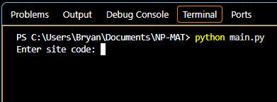
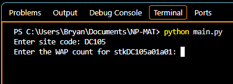
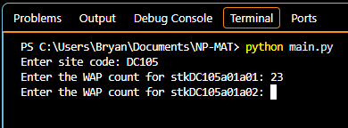
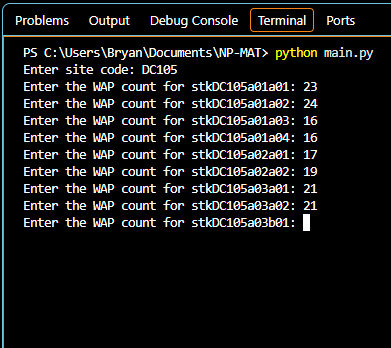
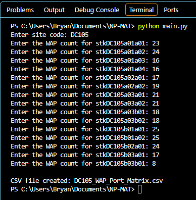
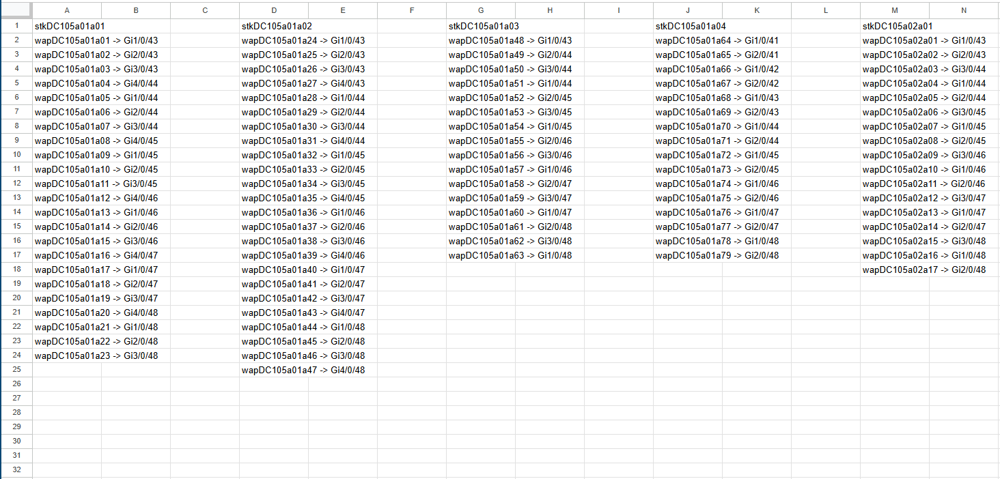
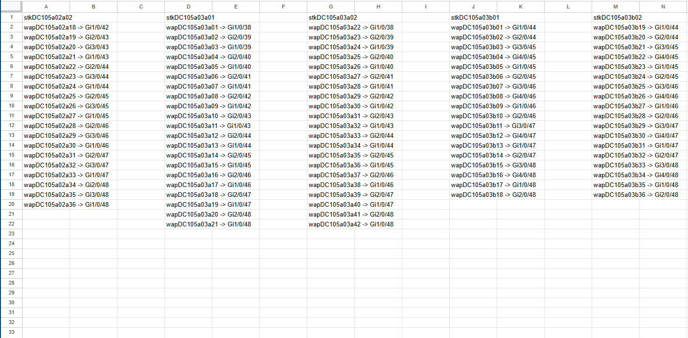
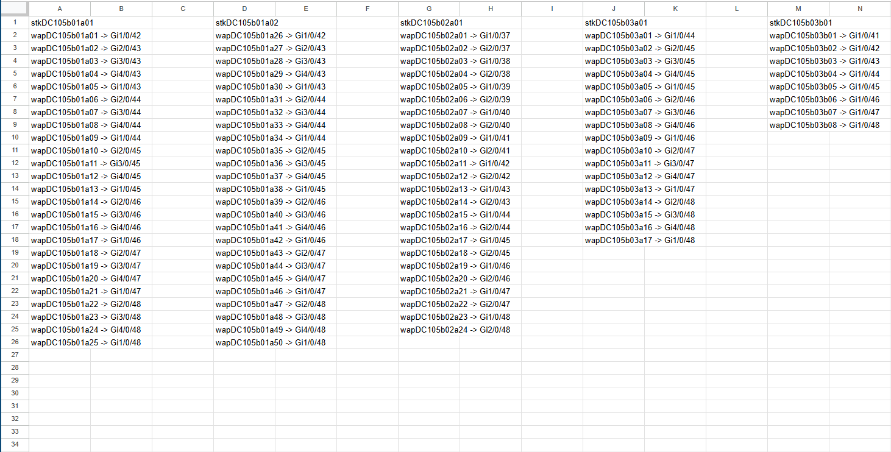

Project Information: The Network Port-Matrix Automation Tool was developed using Python,
to replace a manual network switch-port allocation process. This tool was specifically designed
for wireless access point (WAP) devices that connect to network switches, to provide wireless
connectivity. Standard connection requirements include: WAPs must be connected to the final
ports of each switch, WAPs must be distributed evenly across switch stacks for load-balancing
and redundancy purposes (minimize risk), WAP hostnames must be configured according to
their corresponding switch hostname and MDF/IDF designation. The final output is a port-matrix
consisting of all WAP names paired with the switch-port they will be connected to for each site.
#Network Port-Matrix Automation Tool - main.py
#Bryan Martinez
#This software tool generates Wireless Access Point (WAP) Port Matrices autonomously
#Replaces a time-consuming manual network engineering process
#Increases productivity and efficiency by producing instant results
#Import the following functions from the their respective python module:
from getSiteData import get_siteData
from getStackData import get_stackData
from getWAPcount import get_WAPcount
from distributeWAPs import distribute_waps
from getWAPnames import get_WAPnames
from reservePorts import reserve_ports
from getRedundancy import get_redundancy
from assignWAPports import wap_portAssignment
from displayMatrix import display_WAPmatrix
from exportMatrix import export_WAPmatrix
#1. Call the get_siteData() function
#Prompts for site code input
#Returns switch-stack names and switch-count
#Returns a SINGLE dictionary and the site code
site_data, site_code = get_siteData()
#print(site_code)
#2. Call the get_stackData() function
#Creates nested dictionaries for each stack
#Returns switch-stack names and switch-count
#Returns NESTED dictionary file type: stack_data
stack_data = get_stackData(site_data)
#3. Call the get_wapCount() function
#Displays the stack names and ask user to enter wap count for each stack
#Adds wap count key-value pair to the stack data dictionary
stack_data = get_WAPcount(stack_data)
#4. Call the distribute_waps() function
#Distributes the WAPs evenly amongst switches
#Indicates how many WAPs will be connected to each switch in the stack
#Returns a distribution list data type
#The for loop adds the distribution-list key-value pair to each stack's dictionary
for stack_name, stack_info in stack_data.items():
wapDistribution = distribute_waps(
stack_info["switch_count"],
stack_info["wap_count"]
)
stack_info["wap_distribution"] = wapDistribution
#print(stack_data)
#5. Call get_WAPnames() function
#First, a closet_counter{} dictionary is created
#The dictionary keeps count of the number of stacks in any MDF/IDF closet
#This is required to name the WAPs correctly if there is more than 1 stack in any MDF/IDF closet
#The for loop will check for this information and then will call the get_WAPnames() function
#The function then appends a wap-names list to stack dictionary
closet_counter = {}
#Loop through the stacks to determine their MDF/IDF
for stack_name, stack_info in stack_data.items():
closet_id = stack_name[:-2]
#Determine the WAP start number
if closet_id not in closet_counter:
start_number = 1
else:
start_number = closet_counter[closet_id]
#Get the wap names
wapNames = get_WAPnames(
stack_name,
stack_info["wap_count"],
start_number
)
#Append the stack dictionary
stack_info["wap_names"] = wapNames
#Update the counter
closet_counter[closet_id] = start_number + stack_info["wap_count"]
#The statement above starts the new count at 'previous total wap count + 1' (ex: if previous wap_count=18, then new start_number=19)
#print(stack_data)
#6. Call the reserve_ports() function
#Reserves the all WAP switch-ports for each stack
#Returns a dictonary data type containing the reserved ports for each stack AND switch
#The for loop appends the reserved ports to each stack in the stack dictionary
for stack_name, stack_info in stack_data.items():
reservedPorts = reserve_ports(
stack_info["wap_distribution"])
stack_info["reserved_ports"] = reservedPorts
#print(stack_data)
#7. Call the get_redundancy() function
#Ensures that no consecutive WAPs are connected to the same switch (if switch_count > 1)
#Adds redundancy to all wap ports
#Returns a list[] data type containing the FINAL reserved-ports list
#The for loop appends the reserved-port list to each stack in the stack dictionary
for stack_name, stack_info in stack_data.items():
wapPortList = get_redundancy(
stack_info["reserved_ports"])
stack_info["wap_port_list"] = wapPortList
#print(stack_data)
#8. Call the wap_portAssignment() function
#Completes the WAP PORT MATRIX for each stack
#Returns a dictionary{} named WAP_Port_Matrix
#The for loop appends the WAP_Port_Matrix to eaxh stack in the stack dictionary
for stack_name, stack_info in stack_data.items():
WAP_Port_Matrix = wap_portAssignment(
stack_info["wap_names"],
stack_info["wap_port_list"]
)
stack_info["WAP_Port_Matrix"] = WAP_Port_Matrix
#print(stack_data)
#9. Call the display_WAPmatrix() function
#Formats the site's complete WAP port Matrix
#Displays the site's complete WAP Port Matrix to the console
display_WAPmatrix(stack_data)
#10. Call the export_WAPmatrix() function
#Exports the complete WAP Port Matrix to a csv file
#Generate the site's complete WAP Port Matrix csv file - Final Output
export_WAPmatrix(stack_data, site_code)
#Network Port-Matrix Automation Tool - getSiteData.py
#This module contains the site database dictionary and defines the get_siteData() function
#The site database is a dictionary data type: site_database = {}
#The database contains NESTED dictionaries for each site:
#Dictionary name == site code
#key == stack name
#value == switch count
site_database = {
"DC105": {
"stkDC105a01a01": 4,
"stkDC105a01a02": 4,
"stkDC105a01a03": 3,
"stkDC105a01a04": 2,
"stkDC105a02a01": 3,
"stkDC105a02a02": 3,
"stkDC105a03a01": 2,
"stkDC105a03a02": 2,
"stkDC105a03b01": 4,
"stkDC105a03b02": 4,
"stkDC105b01a01": 4,
"stkDC105b01a02": 4,
"stkDC105b02a01": 2,
"stkDC105b03a01": 4,
"stkDC105b03b01": 1,
},
"DC101": {
"stkDC101a01a01": 4,
"stkDC101a01a02": 4,
"stkDC101a02a01": 3,
"stkDC101b02a01": 2,
},
"DC255": {
"stkDC255a01a01": 4,
"stkDC255a01a02": 4,
"stkDC255a02a01": 3,
},
"RS824": {
"stkRS824a01a01": 3,
"stkRS824b02a01": 3,
}
}
#The get_siteData() function returns the site's stack names and switch count according to the site code entered
#The site's switch-stack data is returned as a SINGLE dictionary data type
#The site code is also returned and stored
def get_siteData():
site_code = input("Enter site code: ").upper()
match site_code:
case "DC105":
return site_database["DC105"], site_code
case "DC101":
return site_database["DC101"], site_code
case "DC255":
return site_database["DC255"], site_code
case "RS824":
return site_database["RS824"], site_code
case _:
print("Invalid site code.")
return None, None
#Network Port-Matrix Automation Tool - getStackData.py
#This module defines the get_stackData() function
#This function creates a a dictionary FOR EACH STACK in the site
#A switch-count key-value pair is assigned to each stack
#The stack_data variable is returned as NESTED dictonary data type
#Example: stack_data = {
# 'stk1':{'sw_count':3},
# 'stk2':{'sw_count':4}
# }
def get_stackData(stackInfo):
#Create a new dictionary
stack_data = {}
#Create a nested dictionary for each stack, use key-value pair: switch_count: n
for stack_name, switch_count in stackInfo.items():
stack_data[stack_name] = {
"switch_count": switch_count
}
return stack_data
#Network Port-Matrix Automation Tool - getWAPcount.py
#This module defines the get_WAPcount() function
#The get_WAPcount() function prompts the user for the WAP count on each stack
#Adds a "wap-count" key-value pair to each switch-stack dictionary
#Adds to the NESTED dictionary 'stack_data' and returns 'stack_data'
def get_WAPcount(stack_data):
#For each stack in the stack_data dictionary, ask the user for the corresponding wap count
for stack_name in stack_data:
wap_count = int(input(f"Enter the WAP count for {stack_name}: "))
#Add the wap count as key-value pair in the corresponding's stack dictionary
stack_data[stack_name]["wap_count"] = wap_count
return stack_data
#Network Port-Matrix Automation Tool - distributeWAPs.py
#This module will determine how many WAPs each switch gets
#The distribute_waps() function accepts switch_count and wap_count integer values
#Distributes the total wap count accross the switches in the stack
#If wap count is not divisible by switch count, extras are added to first switches accordingly
#Returns a LIST data type
def distribute_waps(switch_count, wap_count):
base = wap_count // switch_count
extra = wap_count % switch_count
distribution = []
for switch in range(switch_count):
if switch < extra:
distribution.append(base + 1)
else:
distribution.append(base)
return distribution
#Network Port-Matrix Automation Tool - getWAPnames.py
#This module defines the get_WAPnames() function
#
#
#Before calling the function, 2 new variables were introduced in main.py: closet_counter = {} & start_number
#closet_counter{}: to help keep track of stacks within the same closet
#start_number: to name the waps correctly
#The getWAPnames() function generates a list of WAP names for each stack and returns as list[] data type
def get_WAPnames(stack_name, wap_count, start_number):
#Replace 1st 3 characters 'stk' with 'wap'
base_name = "wap" + stack_name[3:]
#Create the list for the waps
wapNames = []
#Create wap names according to the wap count
#This starts wap naming at 1: for i in range(1, wap_count+1):
#This starts wap naming at 'start_number' and ends at 'start_number' + 'wap_count':
for i in range(start_number, start_number + wap_count):
#Number the waps
wap_name = base_name[:-2] + f"{i:02}"
#Store the wap names in a list
wapNames.append(wap_name)
return wapNames
#Network Port-Matrix Automation Tool - getWAPnames.py
#This module defines the reserve_ports() function
#The reserve_ports() function reserves the wap switch-ports
#The WAP ports are reserved according to the the wapDistribution list
#Returns a port_groups{} dictionary data type
def reserve_ports(wapDistribution):
port_groups = {}
for switch_number, wap_count in enumerate(wapDistribution, start=1):
start_port = 48 - wap_count + 1
ports = []
for port in range(start_port, 49):
ports.append(f"Gi{switch_number}/0/{port}")
port_groups[switch_number] = ports
return port_groups
#Network Port-Matrix Automation Tool - getRedundancy.py
#This module defines the get_redundancy() function
#The get_redundancy() function returns the final reserved-ports list, in correct order, with redundancy applied
#The function applies redundancy by ensuring that no consecutive WAPs are connected to the same switch (if switch_count > 1)
#Returns a list[] data type
def get_redundancy(reservedPorts):
wapList = []
max_rounds = max(
len(ports)
for ports in reservedPorts.values()
)
for round_number in range(max_rounds):
for switch_number, ports in reservedPorts.items():
if round_number < len(ports):
wapList.append(
ports[round_number]
)
return wapList
#Network Port-Matrix Automation Tool - getRedundancy.py
#This module defines the wap_portAssignment() function
#The wap_portAssignment() function completes the WAP PORT MATRIX for each stack
#Returns a dictionary{} data type: WAP_PORT_MATRIX
def wap_portAssignment(wapNames, wapPortList):
#Create the new dictionary
WAP_PORT_MATRIX = {}
#Concatenates wap name with corresponding port
for wap_name, port in zip(wapNames, wapPortList):
WAP_PORT_MATRIX[wap_name] = port
return WAP_PORT_MATRIX
#Network Port-Matrix Automation Tool - displayMatrix.py
#This module defines the display_WAPmatrix() function
#The display_WAPmatrix() function formats ALL stack matrices
#The final WAP port matrix lists all the WAPs and their assigned port
#The matrix is segmented by stack names to provide a clear, structured layout
def display_WAPmatrix(stack_data):
for stack_name, stack_info in stack_data.items():
print()
print(stack_name)
for wap_name, port in stack_info["WAP_Port_Matrix"].items():
print(f"{wap_name} -> {port}")
#Network Port-Matrix Automation Tool - displayMatrix.py
#This module imports the csv module and defines the export_WAPmatrix() function
#Import Python's csv module to access csv functionality
import csv
#The export_WAPmatrix() function exports the complete WAP Port Matrix to a csv file
#The final output is a generated WAP Port Matrix csv file
def export_WAPmatrix(stack_data, site_code):
filename=f"{site_code}_WAP_Port_Matrix.csv"
with open(filename, "w", newline="", encoding="utf-8") as csv_file:
writer = csv.writer(csv_file)
for stack_name, stack_info in stack_data.items():
# Write the stack name
writer.writerow([stack_name])
# Write each WAP-port assignment
for wap_name, port in stack_info["WAP_Port_Matrix"].items():
writer.writerow([f"{wap_name} -> {port}"])
# Add a blank row between stacks
writer.writerow([])
print(f"\nCSV file created: {filename}")
INPUT:
The Network Port-Matrix Automation Tool
collects the required site and switch-stack
information before generating the port matrix.





OUTPUT:
The Network Port-Matrix Automation Tool
can display the formatted matrices to the
terminal or can generate a port-matrix CSV file


